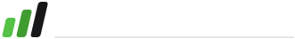

Pragmaatiline liikumine.
Enesekindel, edasiviiv, tasuvuse-põhine tööriist - mitte akadeemiline, mitte ajakirjalik. Juht: tõsta end uuele tasemele.
Uus (v3) vs vana logo
Peamine logo on nüüd v3 "pragmaatiline liikumine" märk - puhtad geomeetrilised tõusvad ribad + Sora sõnamärk. Vana logo on alles hoitud (old_*) viitamiseks ja varuks.
Logolukk - hele taust
Logolukk - tume taust
Märk + animatsioon

Kolm tõusvat ribakest + täpp
- Geomeetria (täpselt nagu style-tile): ribad laius 11, vahe 5, grupil
skewX(-13°), nurgaraadius ~3. Kõrgused 55% / 78% / 100% 40-st = 22 / 31 / 40 (madalast kõrgeni, vasakult paremale). Tasane, jässakas kasv - mitte ülespoole venitatud. Lamav viewBox-11 -2 63 44. Ehitatud puhaste<rect>-idega - krõbe, mitte joonistuse jälg. - Värvid vasakult paremale: heleroheline
#54c247→ roheline#3f9c30→ must#17181a; täpp must. Liikumise gradient: heledast alguse-energiast kindla lõpuni. - Tähendus: liikumine edasi. Ribad tõusevad - sammhaaval ülespoole. Visuaalne lubadus loosungile "investeeri endasse".
public/logo/old_*.svg. Komponendis Logo.astro saab selle prop'iga old. Kasuta ainult viitamiseks/varuks - vaikevalik on uus v3 logo.Puhas ruum ja vähimad mõõdud
- Puhas ruum: märgi/luku ümber vähemalt ühe riba laiuse jagu vaba ala.
- Ainult märk: vähim 22 px ekraanil, 8 mm trükis (väiksemana kaob täpp).
- Logolukk: vähim 150 px ekraanil, 30 mm trükis (väiksemana kaob loosung - siis lukk ilma loosungita või ainult märk).
Värv kannab tähendust, mitte kaunistust
See ei ole valdkonna-värvisüsteem. Kõik ~9 valdkonda elavad ühe keele all - valdkonnad eristuvad sisu, mitte värvi/märgi kaudu.
Roheline = edasiminek, must = autoriteetne register, taust jahe-neutraalne, amber ainult kui me alles otsime vastet.
Sora + Atkinson Hyperlegible
Pealkirjad: Sora - geomeetriline grotesk, kajab raske väiketähelist sõnamärki, mõjub edasiviivalt. Paksused 600-800. Sõnamärk on elav Sora-800 väiketekst (mitte pilt).
Tõsta end uuele tasemele
Tekst: Atkinson Hyperlegible - loodud loetavuse jaoks (I, l, 1 ja O, 0 ei lähe segi).
Vali oskused, mida tahad osata - me näitame, kes neid õpetab ja kes selle maksab.
Millal millist
| Fail | Mis | Millal |
|---|---|---|
mark.svg | värviline v3 märk | väike pind, favicon, ikoon, kus sõnamärk ei mahu |
mark-white.svg | märk tumedal taustal | tume hero, jalus, tume riba |
mark-animated.svg | animeeritud märk | erihetked (vt §7) |
lockup.svg / -white | märk + sõnamärk + loosung | vaikevalik - päis, jalus, dokumendid |
wordmark.svg / -white | ainult sõnamärk + loosung (Sora kontuur) | tekstikontekst, jalus, kus märk juba olemas |
motif-strokes.svg jt | tõusvad ribad eraldi (motiiv) | maandumislehe hero/aktsent, eraldaja |
*-animated.svg | animeeritud variandid | erihetked (vt §7) |
old_*.svg | vana logo (alles) | ainult viide/varu; komponendis prop old |
Saidil tuleb logo komponendist Logo.astro. Kui ruumi on - logolukk; kui napib - ainult märk. Tumedal taustal alati -white / theme="light". Eraldi *.svg failid on välis-kasutuseks (dokumendid, jagatav meedia) - sõnamärk on neis Sora kontuurina (terav, fondisõltuvuseta).
Iga variant + millal kasutada
Kõik failid on public/logo/ all. Sõnamärk on Sora-800 kontuurina (terav, mitte pildist tehtud).
Ainult märk - logo element
Millal: väike pind, favicon, app-ikoon, kaardi nurk - kus sõnamärk ei mahu.
Logolukk - vaikevalik
Millal: vaikevalik - päis, jalus, dokumendid, jagatavad pildid.
Ainult sõnamärk - tekstikontekst
Millal: tekstikontekst või jalus, kus märk on juba mujal olemas. Sora-800 kontuur - terav igas suuruses.
Motiiv-elemendid - maandumislehe aktsent

Millal: maandumislehe hero/sektsiooni aktsent (motif-strokes), õrn hero-taust (-faint), sektsiooni eraldaja (-divider). Mitte logo asemel - need on dekoratiivsed brändi-elemendid.
Animeeritud variandid (üks kord, austab prefers-reduced-motion)

mark-animated - päise tervitus, salvestuse kinnitus.
wordmark-animated - tekstipealkiri, kus märk on juba olemas.
lockup-animated - täis-logo erihetk (esmane laadimine).
motif-animated - maandumislehe hero.
Tee
- Hoia kriipsude värvijärjekord (heleroheline → roheline → must).
- Anna logole puhas ruum.
- Tumedal taustal kasuta
-white. - Hoia logolukk horisontaalne, baasjoonel.
Ära tee
- Ära venita ega moonuta (hoia kuvasuhe).
- Ära muuda värve (üleni sinine, kuldne vms).
- Ära pööra/kalluta lukku ega muuda kriipsude nurka.
- Ära tee valdkondadele eraldi värvi/märki - üks keel, sisu eristab.
- Ära lisa varju, helki ega kontuuri.
- Ära kasuta amberit mujal kui "veel otsime".
Tõusvad ribad struktuurielemendina
Märgi kolm tõusvat riba korduvad mitte kaunistuse, vaid struktuurina:
- sobivuse/katvuse ribad, mis "tõusevad" (täituvad laadimisel):
- edasi-nool nupul ("Salvesta valikud →") liigub klõpsamisel veidi paremale;
- aktsentkriipsud hero-ribal ja kaardi nurgas (õrnalt, läbipaistvalt).
Iga persoona saab sama sõnumi: sa liigud edasi, tase tõuseb. Ribad/nooled on funktsionaalsed (näitavad edenemist) ja kannavad brändi DNA-d korraga.
Kus mõjub, kus mitte
Animeeritud logo joonistab kolm kriipsu järjest "üles", siis ilmuvad täpid (~0,8 s, korra). Austab prefers-reduced-motion (siis kohe lõppseis).
Kus mõjub
- Esmasel lehe laadimisel päises - lukk tõuseb korra. Üks kord, mitte iga lehe vahetusel.
- Salvestamise hetkel ("Sinu valikud on hoitud") - kinnitab "tehtud, sa liikusid edasi". Strateegiliselt tugevaim hetk.
- Tühi/laadimis-seisund - märk tõuseb korra, et koht ei mõjuks katkisena.
Kus MITTE
- Mitte igal lehel ega iga laadimisel - kordus tüütab.
- Mitte lõputu loopina - tõus on ühekordne žest.
- Mitte keskendumist nõudva sisu kõrval (vormid, võrdlustabel).
- Mitte siis, kui kasutaja on valinud
prefers-reduced-motion.
Lühidalt: animatsioon on tervitus ja kinnitus, mitte dekoratsioon. Üks tõus õigel hetkel mõjub; kümme tõusu on müra.
Logo.astro
Rakendatud: päis (src/components/Nav.astro) - uus v3 logolukk <Logo variant="lockup" animated />, ribad tõusevad esmasel laadimisel korra. Soovitatud järgmine koht (mitte veel tehtud): konto salvestamise kinnitus.
src/components/Logo.astro on ainus koht, kust logo tuleb. Vaikimisi uus v3 logo. Propid:
variant:"mark"|"lockup"(vaikimisi lockup)theme:"dark"(hele taust) |"light"(tume taust)animated: ribad tõusevad korra (austab reduced-motion)old: renderdab säilitatud vana logo
<Logo variant="lockup" animated /> <!-- päis: v3 lukk, ribad tõusevad -->
<Logo variant="mark" theme="light" /> <!-- v3 märk tumedal -->
<Logo variant="lockup" old /> <!-- vana logo (varu) -->Allikas: docs/brand-manual.md · style tile: docs/style-tile-pragmatic-momentum.html · disain: docs/prototype-konto-onboarding-v3.html